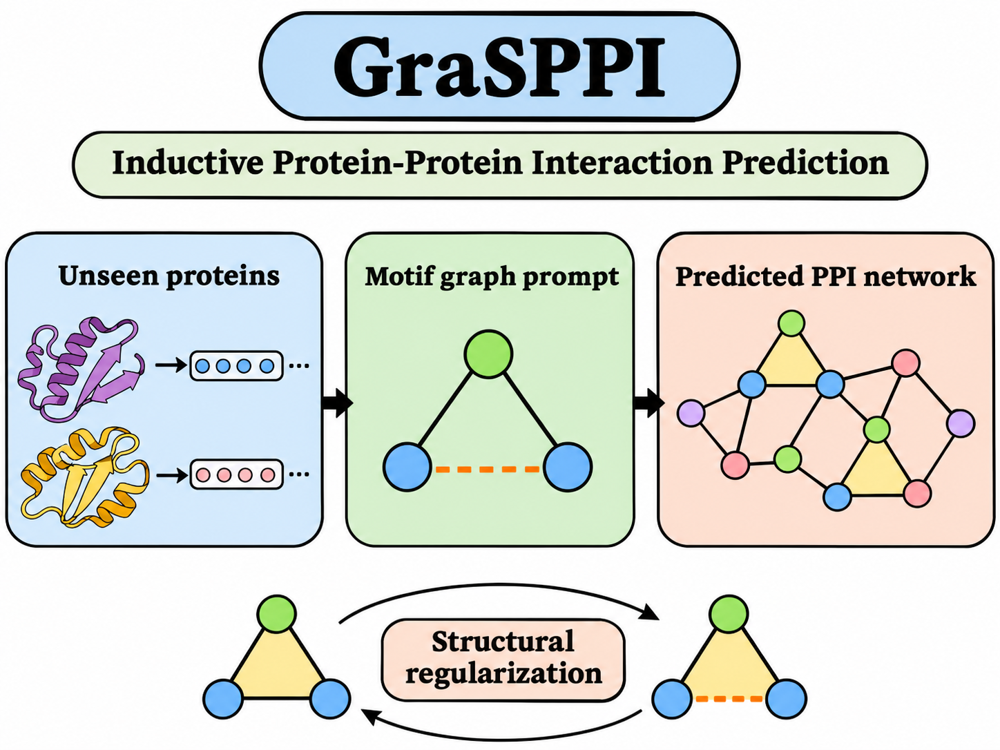

Deep Learning Framework for Inductive Protein–Protein Interaction (PPI) Prediction
- To address the challenges of topological distortion in predicted PPI networks and the lack of network context for unseen proteins, we proposed GraSPPI, a motif graph prompt tuning framework for inductive PPI prediction.
- At the pair level, we designed a motif template based on triadic closure that infers each pair's shared interaction partners from proteins' intrinsic features and uses them as a prompt for the interaction decision.
- At the network level, we introduced structural losses that regularize the predictions on sampled training subgraphs jointly, so that the predicted network keeps the structure of the true network.
- Extensive experiments demonstrate that GraSPPI effectively preserves the topology of held-out PPI networks. It had the best average rank across multiple metrics among the compared methods.